As we have learned in the last lecture there are three distinct phases of database design:
-
Conceptual Design (Lecture 02)
- creation of a semantic data model that describes all important aspects from the requirement analysis
- primarily serves the purpose to clearly (eindeutig) communicate the data that is to be stored and its realationships in a nontechnical way
-
Logical Design (this lecture until ???)
- transforms the conceptual model into a concrete data model, which can be implemented in a database system
- the logical design / data model also does not hold cocrete implementation details such as DBMS, programming language(s) or hardware
-
Physical Design (Lecture ???)
- describes the actual implementation of the logical data model
In this lecture we turn or focus onto the logical design
Logical Data Model
Which data model is appropiate for the logical design process? The relational data model because it has a simple structure, an elegant theoretical foundation (formal description) and is economically relevant (about ~80% of database systems are based on the relational paradigm despite development/creation of alternatives).
Relational Model
The relational model (RM) was introduced in a paper by E.F. Codd in 1970, which pertains as a milestone to this day. The most know prototype of this theoretical approach was created by IBM in 1975 (System R). The in the process developed query language SEQUEL was later standardized as SQL and is the most common query language for relational DBMS today.
The first commercial systems were released at the end of the 70s for example Orcale (by Orcale Corporation) or DB2 (by IBM). Today there are hundreds of DBMS that are based on the relational data model.
Relational Model - Terms and Definitions
The relational model is based on the mathematical concept of a (finitary?) relation, which can be represented well as a table consisting of rows and columns. Rows represent different attributes of one entity. Columns represent the same attribute of all entities. An attribute corresponds with the attribute idea in the Entity Relationship Model (conceptual design) and is a property/characteristic of an entity.
-
domain
- describes the domain(Wertebereich, aber Wertebereich ist eig codomain und definitionsmenge ist domain..) of an attribute
- this domain has to be atomic → cannot hold nested structures and/or sets
-
relation
- a relation R is a subset of the cartesian product of \(n\) domains \(D_i\):
\( R \subseteq D_1 * D_2 ... * D_i ... D_n \)
-
tuple
- an element (row) of a relation is called "tuple"
-
degree (Grad)
- the degree of a relation R describes the amount of attributes resp involved domains
- symbol: degree(R) / Grad(R)
-
cardinality
- the cardinality of a relation R describes the amount of tuples (rows/elements) in R
- symbol: |R|

Relations and Schemas
database context
- the mathematical definition of a relation just describes a set of tuples
- an attribute results from the position of the attribute domain when forming the product (Produktbildung)
- since database context attributes shall be comfortably identifiable via their name, we need an additional compononent to describe the relation
relation schema
- includes the specification of the domains and sets of all domain names/identifiers (attributes) which are uniquely to a relation (umfasst die Spezifikation der Domänen und die Menge aller - innerhalb einer Relation eindeutigen - Domänenbezeichnungen (Attribute))
- describes the creation procedure (Bildungsvorschrift/Schablone) for a relation
- a relation is a set of tuples that is created with the help of this procedure guide
- databases usually manage multiple tables, therefore multiple relation schemas have to be described - this is done through database schemas
- when \(A_1, A_2, ..., A_n\) are named attributes with the domains \(D_1, D_2, ..., D_n\) then the set \({A_1:D_1, A_2:D_2, ..., A_n:D_n}\) is the according relation schema
relation
- a relation R that is defined by a relation schema S is a set of projection (Menge von Abbildungen) of attribute names onto their corresponding domains
- that means R is a set of \(n\) tuples \(A_1:d_1, A_2:d_2, ..., A_n:d_n\) with \(d_1 \in D_1, d_2 \in D_2, ..., d_n \in D_n\)
- eg: Buch \(\subseteq\) string(isbn) x string(titel) x decimal(preis)
- in the common use of language the terms "relation" and "relation schema" are often used interchangebly
- so the term "relation" may refer to the relation schema, the manifestation (Ausprägung) of a schema or both
- however it is important to keep both aspects in mind: a relation underlies (unterliegt) a schema and is itself an instance (Ausprägung) of that schema
- one of Codds requirements was that domains are atomic → the term normalized relation clarifies this demand and usually "relation" is meant as "normalized relation"
database schema
- when \(R_1, R_2, ..., R_n\) are differently named relation schemas then the set \(R = {R_1, R_2, ..., R_n}\) represents the relation database schema R
Relations and Tables
Tables are physical representation forms of relation with some differences:
-
finiteness (Endlichkeit)
- tables are finite (because of limited ressources)
- relations can be infinite (as long as at least one domain is finite)
-
order (Sortierung)
- tables are always sorted (even when the sorting criteria is not immediately obvious)
- in case of relations only the existence of a tuple is relevant, for existing tuples is doesnt matter at which position they are
-
duplications (Duplikate)
- tables may hold entries multiple times / duplicates
- all tuples of a relation are pairwise distinct
Alternative Terms
Especially when using a concrete DBMS alternative terms than those of the relation model are used that are closer to the physical representation (I also added those somewhere above by myself b4 reading this because it felt more natural :D ):
- a "relation" is often called a "table" or a "file"
- a "tuple" is often called a "row" or "data record"
- an "attribute" is often called a "column" or "field"
Relational Keys
superkeys
- a superkey represents a set of attributes which allows to differentiate all tuples of a relation
candidate keys
- a canidate key is a superkey who'se attribute set is minimal → that means no subset of his attributes allows the unique identification of all tuples of a relation (so viel attribute wie nötig um eindeutig zu unterscheiden/identifizieren und mit weniger attributen nicht möglich)
primary keys
- a primary key is a canidate which is used primarily to distingiush tuples of a relation
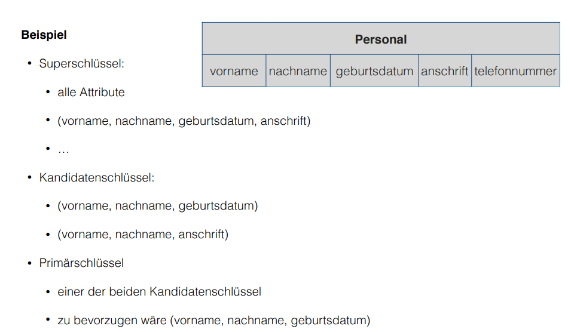
Relational Model - Relationships
Relations can be associated with each other. To achieve that primary key attributes of the relation which should be associated is added to the relation which realizes that relationship. The primary key which was added to a relation for this purpose is called foreign key. Therefore every foreign key has to be a primary key somewhere in a relation.

Null Values
For some tuples of a relation the concrete value of an attribute may not be known (yet) or it may be inappropiate to have an value existing there. To represent such cases the null value (null) exists which is a "non-value" alas "unknown value" (which shall not be confused with the value 0).
Null values have to be treated differently than the usual attribute values. There's an trivalent (dreiwertig) logic to deal with them (more on that later).
It should be a goal to minimize the cases where null values are needed although this is often not possible to realize. An excessive use should be avoided, this is especially true when representing relationships.
Logical Design: ERM to RM
The task at hand is to translate the conceptual data model (ERM, entity relationship model) from the conceptual design phase into the logical data model (RM, relational model).
The steps required are:
- derive the relations from the attributes, entity types and relationship types of the ERM (ERM to RM)
- normalization of relations
- validation of relations in regards to user transactions
- verification of integrity conditions (Integritätsbedingungen)
- consultation (Rücksprache) with users
ERM to RM
Lets start with the conversion of strong entity types.
ERM to RM - Strong Enitity Types
For each strong entity type we create a relation:
- simple attributes are just copied into the relation
- in case of compound attributes only the underlying/simple attributes are copied
- we'll later deal with derived and multivalent (see Lecture 02 for a reminder on this)
- the primary key of the entity type will also be the primary key of the relation
- the primary key is designated via underlining
Example of a Student relation: Student( matrikelnum , firstname, lastname, birthdate)
ERM to RM - Relationship Types
Create a new relation for each relationship types (not always required as we'll see later why/how):
- copy (if existing) relationship attributes to the new relation
- add the primary keys of the involved entity types and mark them as foreign keys
- foreign keys are visualized via a bold font (in the exam you can draw a rectangle around because bold font is difficult)
- depending on the cardinality of the relationship type mark a subset of the foreign keys as the primary key of the relationship relation:
-
1:1→ one of the two foreign keys becomes the primary key -
1:N→ the foreign key which stems from theNside becomes the primary key -
N:M→ both foreign keys have to become primary keys - complex relationships → sensible identification via complexity reduction (? lol)
-
In general all relationship types can be expressed like this. The advantages are a simple and uniform procedure/strategy and the prevention of null values. However there are some disadvantages because there needs to be a relation created for each relationship type which can be a lot! Also some integrity conditions regarding cardinality may not be expressable adequately.
So as an alternative relationship types of certain cardinalities can be expressed more efficient and adequately.
-
N:MRelationshipThe previous paragraph is not applicable for
N:Mrelationship types. For those we always need a dedicated relation: 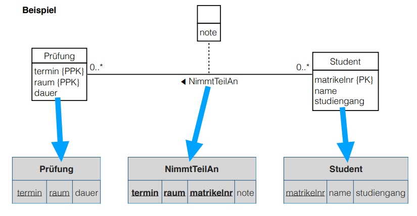In case of the other cardinalities we can use the alternative approach.
-
1:NRelationshipWe add the primary key of the entity type from the
1side of the relationship as a foreign key to the entity type from theNside. If the relationship type has attributes, then those are also added to the entity relation from theNside of the relationship. 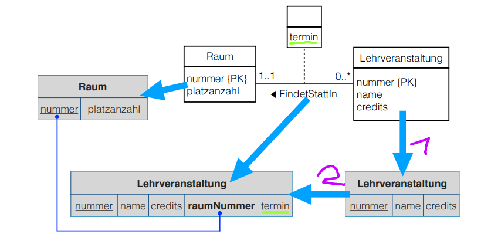This is however optional and if for example null values are unacceptable then we have to express the relationship type in its own relationship relation.
The above already kind of leads us to optional and obligatory participation of entities in relationships. As we've seen above the primary key of the 1-side entity gets added as a foreign key to the n-side entity. This works perfectly as long as the participation of the 1-side entity is obligatory meaning that a n-side entity always gets a foreign key of a 1-side entity assigned since it is mandatory in that kind of relationship. However there might be other cases where a participation of 1-side entities might be completely optional. This would then lead to empty tuples / null values in some n-side entities. As already state above (after the picture) if this (null/empty values) are acceptable everything can be done as is, else there has to be created a designated relationship relation.
I find this is kind of hard to explain and therefore I split the general information (paragraphs around the picture) and the thing with the obligatory and optional participation. I advise to take a look at the lecture slides in regards to optional and obligatory participation. Don't know how important it is for the course tho, until now we did not speak about it really (in the tutorium for example).
-
1:1RelationshipIn case of an obligatory participation on both sides of the relationship: Since all entities of both entity types participate in the relationship, both entity relations and the relationship attributes could be merged into one relation. Then one of the two primary keys would serve as the primary key for the resulting relation. (Merging)
However if both entity types are participating in other relationships as well (especially relationships with 1:N or N:M cardinalities) then it is not possible to merge them. In that case we add the primary key of one of the entity relations to the other entity relation as a foreign key (as well as the relationship attributes if existing). So to one relation you add the primary key of the other relation as a foreign key and all the relationship attributes. (Referencing)
Example of merging the relationship as well as the entity relations: 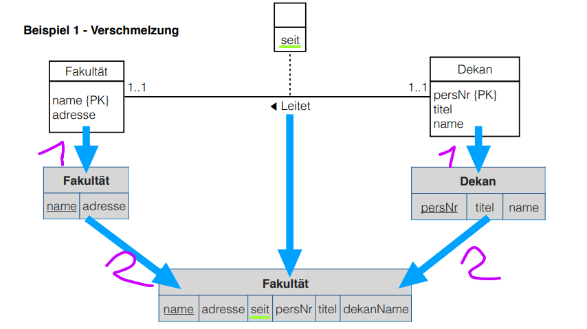
Example of referencing (Variante A): 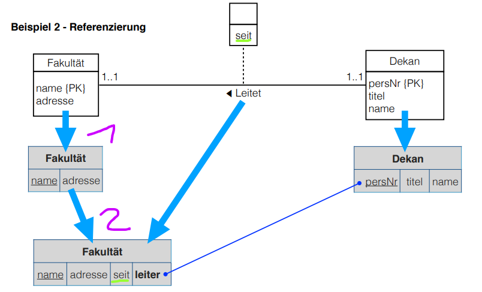
Example of referencing (Variante B): 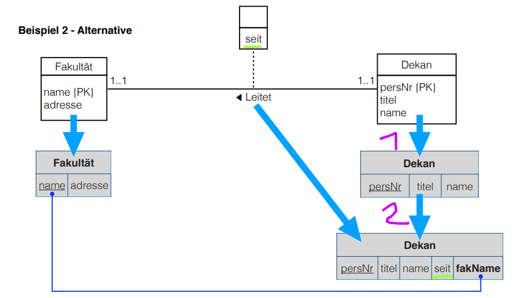
\(\hookrightarrow\) in obligatory
1:1the reference can be in either relation (see the above pictures)In case of an obligatory participation on one side of the relationship: We add the primary key of the entity type that is obligatory participating
(1..1)in the relationship as a foreign key to the entity type that is optionally participating (0..1). If the relationship type has attributes, then those are also added to the entity relation that is optionally participating in the relationship. 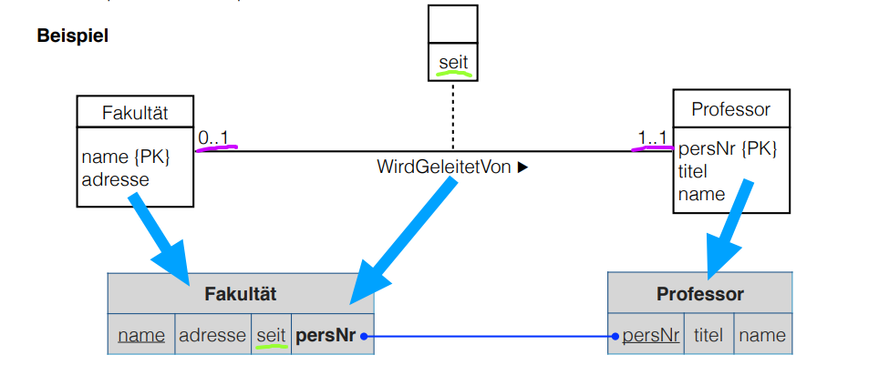 Think about how this helps or why we do it this way. Look at the picture above, as you can see a faculty is always lead by exactly one professor, but a professor leads either 0 or 1 faculties. So if we would have put the faculty name as a foreign key into the professor relation then there can be null values in the case where a concrete professor entity does not lead a faculty. It is better like we did it! Because a faculty always has a professor that leads it (1..1 → obligatory) there won't be null values in the faculty relation since there has to be apersNrof an professor that leads it :) I hope this explanation helps.In case of an optional participation on both sides of the relationship: When null values are not allowed / inacceptable a new relationship relation has to be created. In that relation the primary keys of the entity relations are added as foreign keys as well as potential relationship attributes. One of the foreignkeys also becomes the primary key of newly created relationship entity.
When null values are allowed / acceptable then the primary key of one relation and potential relationship attributes are added to the other entity relation type. Theoretically it doesn't matter which entity relation is linked via it's primary key, however knowledge about the relationships and amount of data (rows for each relation) might help to pick the one where less null values would occur. If there is for example a entity relation type where we have two data sets forest 1 and forest 2 which are optionally managed by one ranger (Förster) at max (
0..1). And we have 500 data sets of rangers which can optionally manage a forest (0..1) then it would make more sense to add the rangers PK as a foreign key to the forests instead of the other way round, sinceforestIDas a foreign key in the ranger entity relation will be empty alot!Another example from the slides: 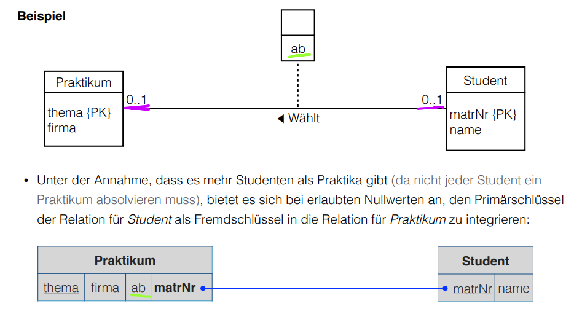
ERM to RM - Weak Entity Types
The expression of a weak entity type in the relational model always has to include the relationship to the superior strong entity type (übergeordneter starker Entitytyp). The following steps describe how do this, they are however optimizable:
- create a relation for every weak entity type in the ERM
- add the attributes to the relation in the same manner as you'd do it for strong entity types
- then the primary key of the superior strong entity type is added as a foreign key
- the primary key of this new relation consists of the original primary key of the weak entity type (if existing) and the foreign key which stems from the super strong entity type
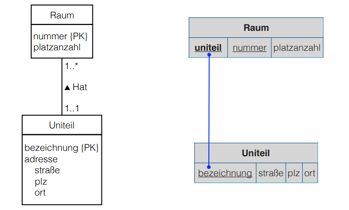
In case of an obligatory participation of all entities of both sides of a 1:1 relationship between a weak and a strong entity type, they entity types can be merged into one relation (as it is with obligatory 1:1 between strong ETs):
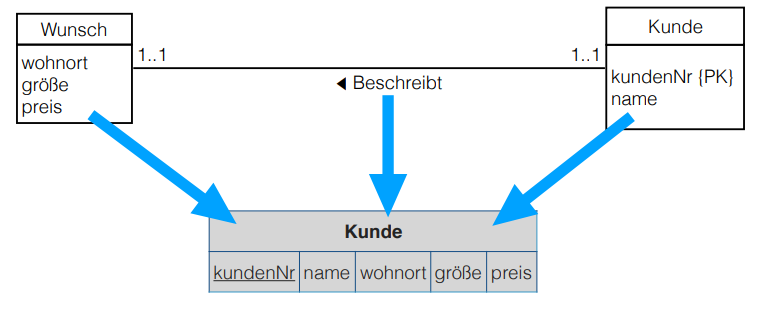
ERM to RM - Multivalent (Mehrwertige) Attributes
To translate multivalent attribute types into the relational model:
- create a relation \(R\) for the multivalent attribute \(A\) (empty relation with name of the attribute "type")
- add the primary key \(K\) of the entity relation type and \(A\) to \(R\)
- mark \(K\) as a foreign key
- mark \(K\) and \(A\) as primary key of \(R\)
- exception: if \(A\) itself serves as a primary key of the original entity type, then \(A\) is the primary key of \(R\)
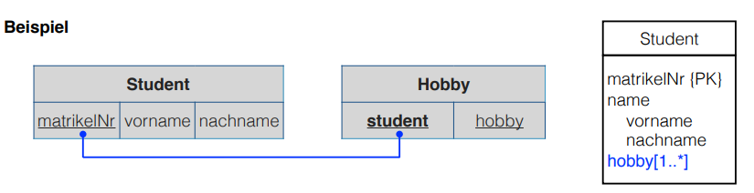
Now remember the steps required to translate from ERM to RM from the beginning of this post:
"The steps required are:
- derive the relations from the attributes, entity types and relationship types of the ERM (ERM to RM)
- normalization of relations
- validation of relations in regards to user transactions
- verification of integrity conditions (Integritätsbedingungen)
- consultation (Rücksprache) with users"
At this point we covered the first step yay.
The normalization of relations will be covered latter and now we'll shortly turn to integrity conditions.
Integrity Conditions and Data Integrity
Integrity conditions/rules describe a set of requirements to guarantee the consistency, the correctness and completeness of data. It is required to document all integrity rules in the logical design phase.
The following kinds of integrity constraints have to be respected:
- entity integrity → is an integrity rule which states that a primary key should be unique and not null
- referential integrity → integrity rule that states any foreign-key value can only be null or the value of some existing primary key; it has to be specified what happens when changing operations on PKs and FKs occur
- domain integrity → the value of an attribute has to be part of the (co)domain (Wertebereich) of its attribute domain
- obligatory data → for some attributes a concrete value has to be specified for every tuple (eg key attributes)
- cardinality and participation → rules that describe restrictions of relationships
- other → rules that describe all other integrity constraints derived from requirements of the real world "problem"
Interim Conclusion (Zwischenfazit)
Since the expressiveness (Ausdruckskraft) of the relational model (logical design) is much lower than the epressiveness of a conceptual model (eg ERM), the conceptual model should always be done and done first! The meaning of things is often times not clear without additional knowledge from the conceptual design.